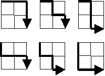

Starting in the top left corner of a $2 \times 2$ grid, and only being able to move to the right and down, there are exactly $6$ routes to the bottom right corner.

How many such routes are there through a $20 \times 20$ grid?